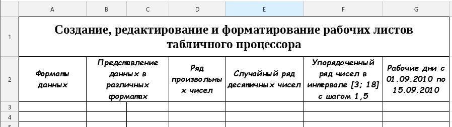
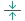
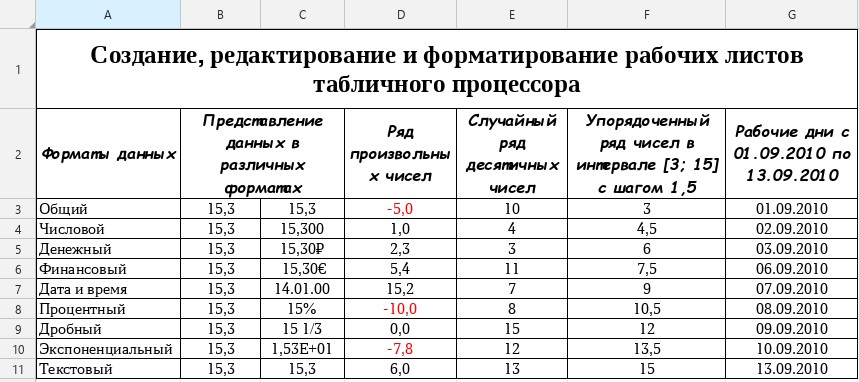

Практическая работа №1
Создание, редактирование и форматирование рабочих листов табличного
процессора
1 Цель работы:
1.1 Закрепить навыки создания и редактирования рабочих листов табличного процессора;
1.2 Освоить методы автозаполнения при вводе данных в ячейки рабочего листа;
1.3 Приобрести умение выполнять итоговые вычисления в электронной таблице;
1.4 Приобрести умение форматировать рабочие листы электронной таблицы.
2 Основное оборудование:
2.1 ПЭВМ.
3 Подготовка к работе:
3.1 Подготовить бланк отчета.
4 Задание:
4.1 Создать рабочий лист по образцу, приведенному на рисунке 1.

Рисунок 1 – Образец электронной таблицы
4.2 Заполнить столбец А наименованиями форматов ячеек МойОфис Таблица;
4.3 Ввести данные с представлением в различных форматах;
4.4 Заполнить ячейки вручную произвольными числами из заданного интервала с проверкой вводимых данных;
4.5 Заполнить ячейки случайными числами из заданного интервала с помощью операции автозаполнения;
4.6 Заполнить ячейки числами, которые образуют арифметическую прогрессию;
4.7 Выделить отрицательные значения в столбце D красным цветом.
5 Порядок выполнения работы:
5.1 Запустить МойОфис Таблица;
5.2 Сохранить рабочую книгу под именем «Практическая работа №1»;
5.3 Переименовать рабочий лист. Для этого щелкнуть правой кнопкой мыши на ярлыке листа. В контекстном меню выбрать команду «Переименовать». На ярлыке листа ввести новое имя листа «Задание 1»;
5.4 Объединить ячейки A1:G1. Для этого выделить диапазон ячеек A1:G1. На панели инструментов в группе команд «Ячейки» выполнить команду «Объединить» с помощью кнопки . В группе команд «Выравнивание» выполнить команду «Выровнять текст по центру» с помощью кнопки  . В группе команд «Выравнивание» выполнить команду «По центру» с помощью кнопки . Ввести текст заголовка в объединенную ячейку по образцу на рисунке 1;
5.5 Оформить заголовок таблицы. Для этого:
- ввести текст по образцу в ячейку А2. Для того чтобы написать текст в несколько в группе команд «Выравнивание» выполнить команду «Перенос по словам» с помощью кнопки ;
- объединить диапазон ячеек В2:С2;
- ввести текст по образцу;
- ввести текст в ячейки D2, E2, F2, G2.
5.6 Ввести наименования форматов ячеек в столбец А.
5.7 В ячейку ВЗ ввести число 15,3. Скопируйте значение ячейки ВЗ в ячейки В4:В13 и С3:С13 при помощи маркера заполнения. Для этого выделить ячейку В3, установить указатель на маркер заполнения. После появления синего квадрата нажмите левую кнопку мыши и перетащите маркер заполнения в примыкающий диапазон ячеек.
5.8 Оформить представление числа 15,3 в форматах, указанных в столбце А.
5.9 Заполнить диапазон ячеек D3:D13 произвольными значениями чисел, не превышающих число 15,
5.10 Заполнить диапазон ячеек ЕЗ:Е13 рядом действительных случайных чисел X [3,15] с двумя фиксированными десятичными знаками после запятой. Для этого:
- выделить ячейку ЕЗ и ввести формулу = СЛУЧМЕЖДУ(3;15). Функция СЛУЧМЕЖДУ(a;b) возвращает случайное число между a и b. Новое случайное число возвращается каждый раз, когда рабочий лист перевычисляется;
- Заполнить ячейки Е4:Е13, скопировав формулу с помощью метода автозаполнения.
5.11 Заполнить ячейки F3:F13 упорядоченным рядом чисел из интервала [3,18] с шагом 1,5. Для этого:
- ввести первое число 3 в ячейку F3;
- ввести второе число 4,5 в ячейку F4;
- выделить ячейки F3:F4 и, удерживая и растягивая маркер заполнения, заполнить диапазон ячеек F3:F13;
5.12 Заполнить столбец G рабочими днями с 01.09.10 по 15.09.10.
5.13 Оформить внешний вид таблицы рабочего листа по своему усмотрению;
5.14 Выделить отрицательные значения в столбце D красным цветом.. Для этого:
– выделить ячейки D3:D13;
– на панели инструментов в группе команд «Число» из выпадающего списка выбрать «Параметры»;
– выбрать формат «Числовой» и выбрать способ выделения отрицательных чисел.
5.15 Окончательный вид электронной таблицы показан на рисунке 2.

Рисунок 2 – Окончательный вид электронной таблицы
6 Содержание отчета:
6.1 Титульный лист;
6.2 Цель работы;
6.3 Ответы на контрольные вопросы.
7 Контрольные вопросы:
7.1 Как переименовать рабочий лист?
7.2 Как объединить несколько ячеек?
7.3 Как заполнить диапазон ячеек случайными числами в заданном интервале?
7.4 Как заполнить диапазон ячеек числами с определенным шагом?
7.5 Какова суть метода автозаполнения?